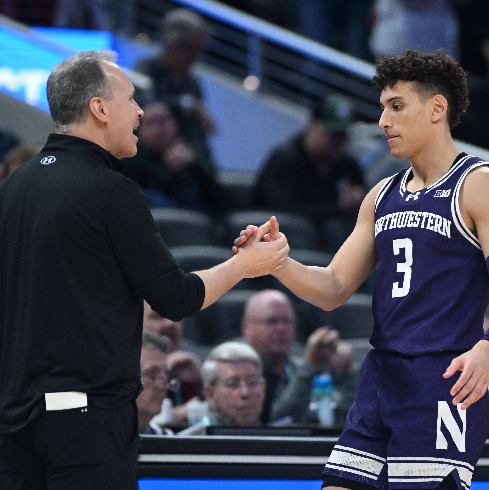
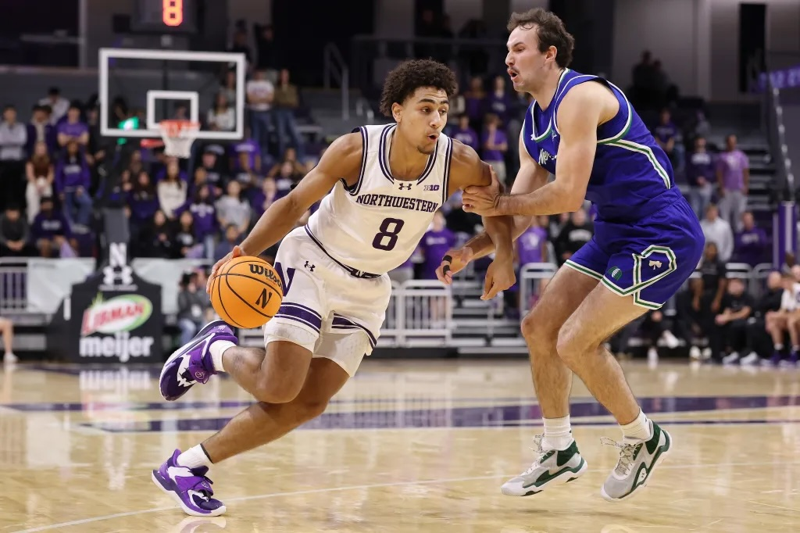
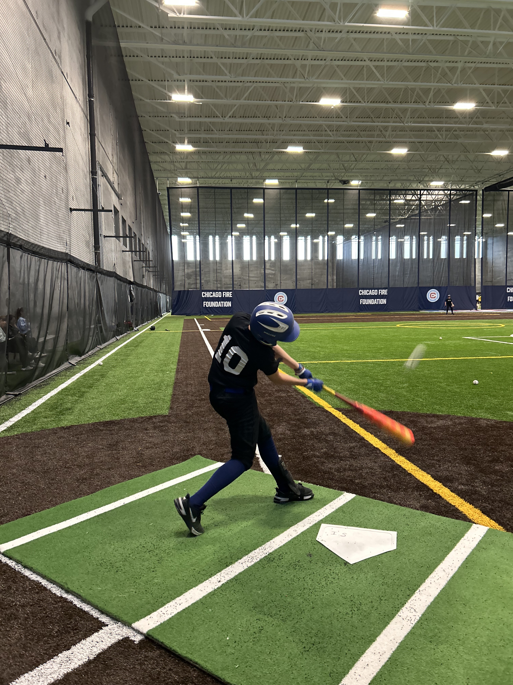
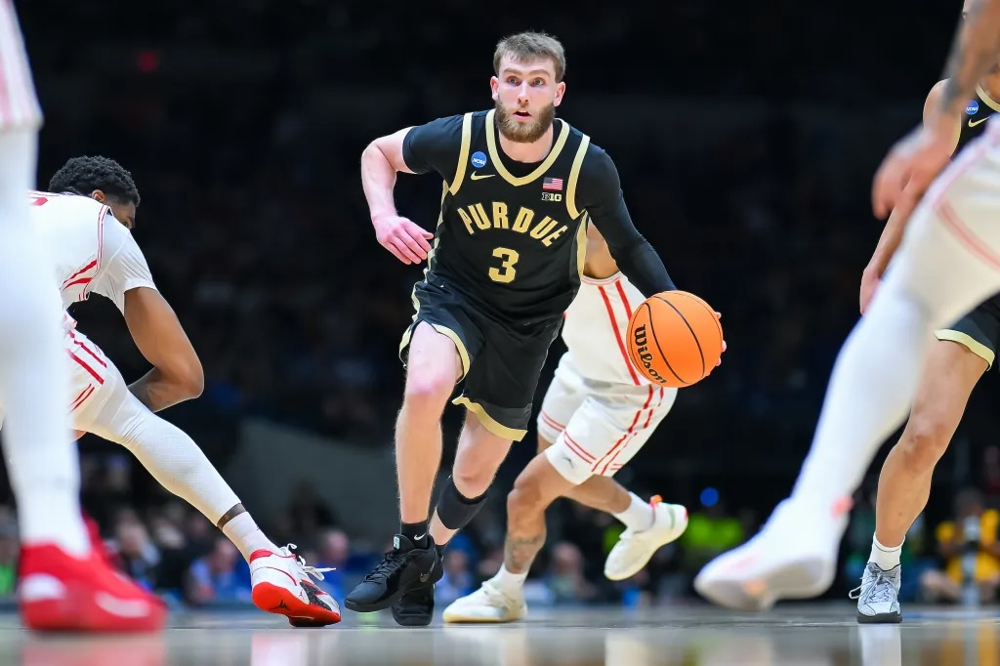

Live Broadcasting & Sports Storytelling
I am currently a senior in the Class of 2027 in the Medill School of Journalism at Northwestern University. Since I was 15, my dream has been to be a play-by-play announcer and I have been pursuing a career in the sports world for as long as I can remember.
My passion for sports broadcasting and story telling comes from an innate desire to be able to sit down and have a fulfilling conversation about sports with anyone and everyone. In my work, I aim to do just that – make sports, with all its complexities and intricacies, into something accessible and enjoyable for all. That characteristic shows in my broadcasting, where I focus on bringing to life the numbers around the game while contextualizing them with the action happening on screen. I frequently tackle complex statistics and coaching concepts in my writing, but ensure that my stories and analysis can be consumed by everyone.
I have been calling games now for over three years, logging hundreds of broadcasts and thousands of hours of preparation since starting college. At Northwestern, I broadcast for WNUR Sports on the radio and Big Ten Plus for telecasts. I have called dozens of games across eight sports for WNUR, with a few major highlights that include calling Northwestern MBB's 2026 Big Ten Tournament run, road trips to Michigan, Minnesota and Penn State for MBB, baseball and WBB, and calling a Northwestern field hockey national championship victory.
At Big Ten Plus, I have been a relied upon voice since my freshman year. I was the only member of my freshman class to broadcast a game for the network and I have continued to be relied upon as part of the main rotation of commentators, especially for baseball and basketball. In both my sophomore and junior years, I called more Northwestern baseball games than any other broadcaster at Northwestern, whether student or freelancer. In addition to my broadcasting work, I am a valuable member of the team in the control room, where I have served in nearly every role. I primarily operate replay or graphics but I have produced, run the scorebug and manned cameras for Big Ten Plus streams.
I have furthered my broadcasting career in both summers by working in summer league collegiate baseball. Most recently, I called 40 games for the Duluth Huskies of the Northwoods League between May 25th and August 8th as part of the largest summer league in the country. You can find my reel from this summer on this website. In 2025, I spent the summer closer to home, calling 25 games for the Bethesda Big Train of the Cal Ripken Sr. Collegiate Baseball League. With the Big Train, our broadcast team set viewership records and were commended by league officials as "the best broadcast in league history" en route to calling a Big Train league championship.
In the writing section of my page, you will primarily find articles written on Inside NU, Northwestern's official sports blog site. For Inside, I have mostly written analytical basketball content, establishing a weekly film review column titled Collins' Classroom, where I broke down the best, worst and funniest from every week of Northwestern hoops. I also have written many pieces for Medill as a journalism student, and some of my best sports-related work is accessible as well.
I am very excited to share my work with you. Please explore the site and feel free to reach out using my contact information in the top right corner!

How a difficult season revealed the grittiness of Northwestern's program following the Big Ten Tournament loss.

Weekly film review column focusing on Northwestern basketball and all the small things that impact the game.

A written feature on the Jason Heyward Baseball Academy.

Big Ten basketball preview: From national championship aspirations to hoping for .500.
View or download my full resume below to see a complete history of my broadcasting and journalism experience.
View Resume (PDF)